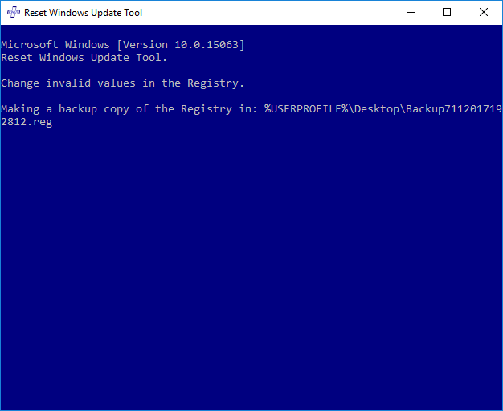

El principal contenido de esta herramienta es reparar los componentes de Windows Update. Sin embargo,
su desarrollo, nos permite realizar otros procesos de resolución de problemas.
Se puede dividir los procesos de corrección en tres grupos:
Procesos de control Son procesos simples que pueden implicar pequeños cambios en el
sistema, por ejemplo: crear una copia del registro, restaurar las conexiones a Internet o reiniciar
su equipo.
Procesos de corrección Son los que nos permiten resolver los principales problemas
del sistema, por ejemplo: Restablecer los componentes de Windows Update o Escanear la protección del
sistema de archivos.
Procesos invasivos Son aquellos que sugieren la reparación o reinstalar el
sistema.
Cambiar valores invalidos en el registro:
Pueden producirse problemas graves si modifica el registro incorrectamente. Antes de modificar
el registro, haga una copia de seguridad para su restauración en caso de que se produzcan problemas.
La opción "Cambiar registros incorrectos" crea una copia de seguridad del registro en el escritorio
de Windows.
p. ej.

Después de crear la copia de seguridad, los valores invalidos en el registros son cambiados. Esto
corrige los errores: 0x8000FFFF, 0x80240020, 0x80070646, entre otros.
Para restaurar el registro, seleccione "Combinar" en el menú contextual.
p. ej.
Siempre que se lleva a cabo un proceso de solución del sistema es recomendable reiniciar su PC para
guardar los cambios.
Puede reiniciar su PC manual o automáticamente a través de la opción
"Reiniciar el equipo", Esta opción te da 1 minuto para guardar el trabajo que se está realizando.
p. ej.